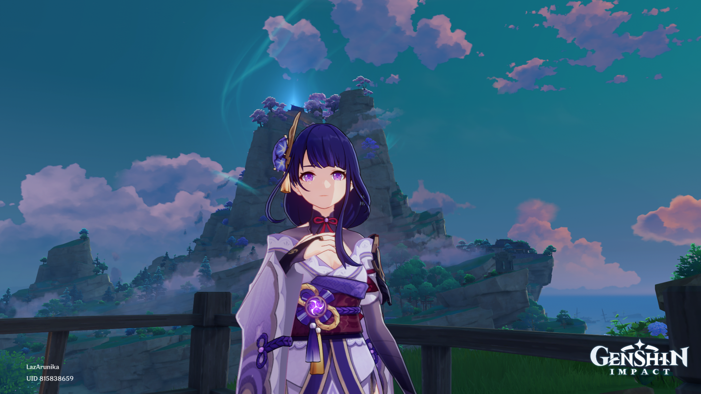
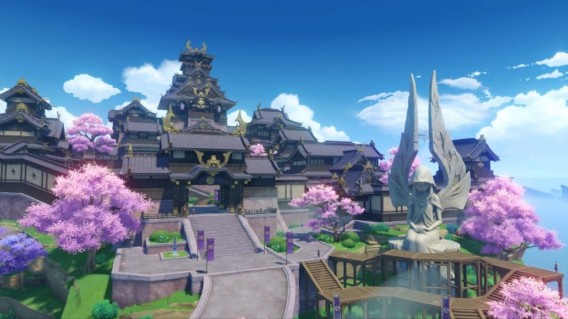
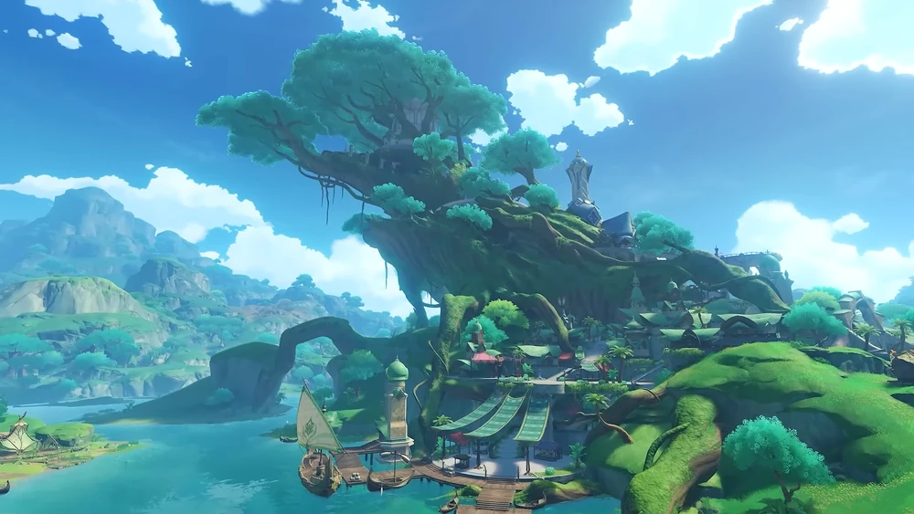

Sejarah

Genshin Impact adalah sebuah permainan video action role-playing game (RPG) yang dikembangkan oleh miHoYo.
Game ini pertama kali dirilis pada 28 September 2020 untuk PlayStation 4, PC, iOS, dan Android.
Cerita dalam Genshin Impact mengikuti perjalanan seorang Traveler yang mencari saudara kembarnya yang hilang di dunia fantasi bernama Teyvat.
Di dalam perjalanan ini, Traveler bertemu dengan berbagai karakter, mengalahkan musuh-musuh yang berbahaya, dan mengungkap berbagai rahasia dunia Teyvat.
Game ini memiliki grafis yang menakjubkan dan gameplay yang menarik, serta cerita yang kompleks dan menarik perhatian pemain.
Genshin Impact juga terkenal karena memiliki sistem monetisasi yang fair dan memungkinkan pemain untuk menyelesaikan game tanpa harus membayar uang
dengan cara yang terlalu berlebihan. Sejak dirilis, Genshin Impact telah memenangkan banyak penghargaan dan menjadi salah satu game terpopuler di seluruh dunia.
Waifu

Raiden Shogun
Raiden Shogun, juga dikenal sebagai Baal atau Archon Elektro, adalah karakter dalam permainan video populer Genshin Impact.
Dia adalah penguasa saat ini dari Inazuma dan menguasai kekuatan Elektro, yang dapat digunakannya untuk menyerang musuh-musuhnya.
Meskipun memiliki sikap yang kerajaan dan dingin, Raiden Shogun memiliki kepribadian yang kompleks dan masa lalu yang tragis,
yang terungkap saat pemain bermain melalui cerita permainan. Sebagai salah satu karakter paling kuat dan misterius dalam permainan,
Raiden Shogun telah menjadi favorit penggemar di kalangan pemain Genshin Impact.
Sebagai karakter fiksi dalam permainan video, kecantikan Raiden Shogun diceritakan dengan penuh detail, dari pakaian tradisionalnya yang megah,
hingga rambut panjangnya yang berkilauan dan mata birunya yang tajam. Wajahnya yang indah dan elegan, ditambah sikapnya yang tenang dan kerajaan,
membuatnya terlihat seperti seorang dewi dalam game Genshin Impact. Namun, kecantikan fisiknya tidak sebanding dengan keindahan kepribadiannya
yang kompleks dan terungkap seiring pemain melalui cerita dalam game.
Region
Region dalam Genshin Impact merujuk pada wilayah fiksi yang dapat dijelajahi oleh pemain di dalam game.
Setiap region memiliki karakteristik geografis dan kultural yang unik, serta cerita dan misi yang berkaitan dengan karakter-karakter dalam game.
Wilayah-wilayah tersebut dapat dijelajahi oleh pemain untuk menemukan berbagai rahasia dan harta karun, serta untuk memperoleh pengalaman dan
karakter-karakter baru dalam game.
Inazuma

Inazuma
Inazuma adalah sebuah wilayah di dalam game Genshin Impact yang terinspirasi dari kebudayaan Jepang.
Wilayah ini terdiri dari enam pulau yang terpisah dan dikuasai oleh seorang penguasa yang dikenal sebagai Raiden Shogun.
Inazuma dikenal karena keindahan alamnya yang spektakuler, termasuk pegunungan, air terjun, dan hutan yang lebat.
Selain itu, Inazuma juga memiliki budaya yang kaya dan beragam, dengan banyak kuil dan pura yang tersebar di seluruh wilayahnya.
Sumeru

Sumeru
Sumeru adalah sebuah wilayah di dalam game Genshin Impact yang terinspirasi dari kebudayaan Mesopotamia Kuno.
Wilayah ini terdiri dari sebuah kota yang mengelilingi pohon raksasa, hutan hujan tropis, dan gurun. Sumeru dikenal karena kebudayaan dan filosofi kuno
yang maju, dengan banyak kuil, piramida, dan monumen yang tersembunyi di seluruh wilayah tersebut. Selain itu, Sumeru juga dikenal karena kemampuannya
dalam alkimia dan teknologi, yang tercermin dalam keindahan arsitektur dan universitas mereka yang terkenal.